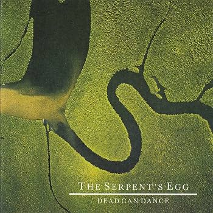

Lyrics:
Instrumental
Verse 1

John Francis Dooley, Wipe the sleep from your eyes.
And embrace the light
You have slept now, For a thousand years.
Beneath starless nights.
And now it's time for you to renounce the old ways.
And see a new dawn rise.
Verse 2
In former days, Masks were raised
When the god came down From off of the Mountain.
And the sacrifice was made,
For he knew the day of wrath was fast approaching..
Just like yesterday before the war.
Instrumental
Refrain
John Francis Dooley, the scapegoat has run.
All our sins are disowned
And now it's time for you, To take off your mask.
And cross the Rubicon.
Bridge
If you and I were one, Within the eyes of our designs.
It would still not change the fact of our leaving...
For the Isles Of Ken we are assailing.
Outro
Just like Ullyses,
On an Open Sea.
On an odyssey,
Of self discovery.
Instrumental